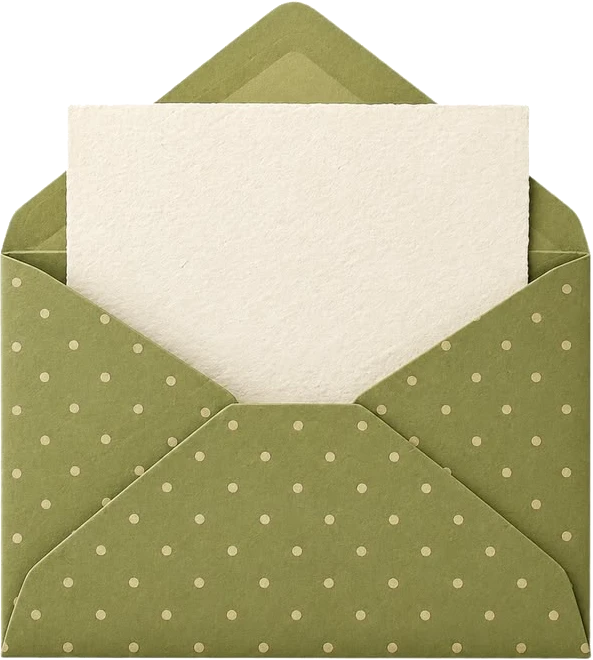

Sandra’s social media management portfolio
About me
Hi, I am Sandra. I manage social media and communities for brands, and a lot of what sits around them too.
I have built strategy, planned paid campaigns, filmed at wineries across Europe, run product shoots, designed a logo and packaging, written blogs, and set up automations that answer customers while I sleep. I have done it for a global wine app, a student housing company in Copenhagen, and a few start-ups that were brand new when I joined.
I care about two things: that it looks good, and that it works. This page shows both.
Work
Check my CV

 Open Sandra Timura's CV as a PDF (opens in a new tab)
Open Sandra Timura's CV as a PDF (opens in a new tab)